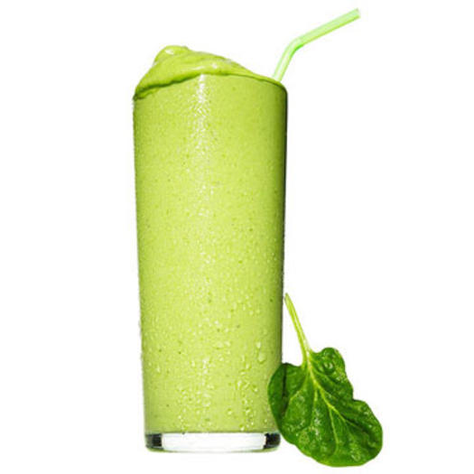
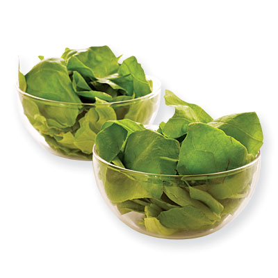
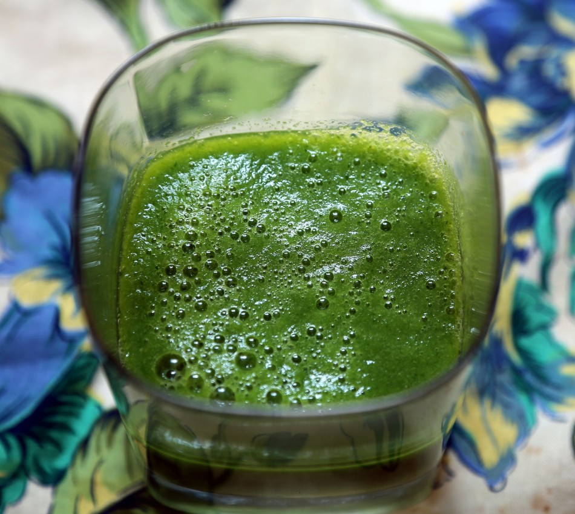
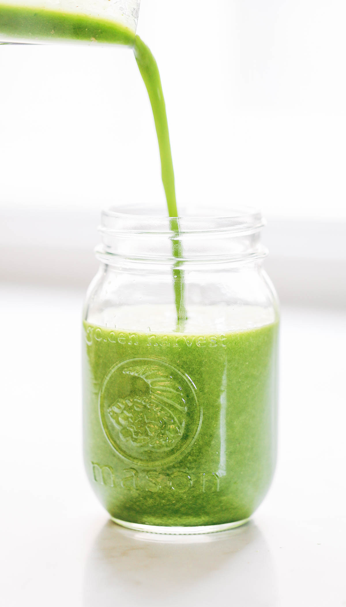
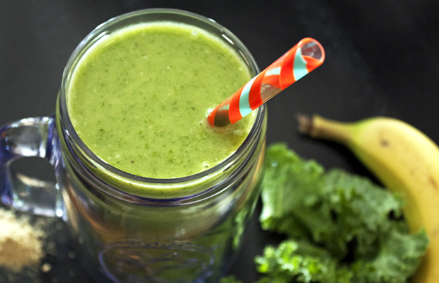

Green Smoothie
Ingredients
A green smoothie is healthy and delicious
- 2 cups fresh leafy greens (e.g. spinach)
- 2 cups water
- 1 cup pineapple
- 1 cup mango (frozen)
- 2 bananas (frozen)
Step 1
Toss two tightly packed cups of your favorite leafy greens into a blender
Apart from just tasting good, leafy green vegetables help people live healthier, longer lives. All green leafy vegetables are packed with vitamens and antioxidants that give you a satifying boost of energy and boost your immune system.
Step 2
Add water and blend until all leafy chunks are gone
It's best to blend your leafy greens with water before you add fruit so that you can be sure to get a smooth finish. A smoothie is supposed to be smooth, after all!
Step 3

Add mango, pineapple, and bananas and blend again until smooth
Adding fruits to your smoothie will make it absolutely bursting with flavor! Fruits also provide tons of added vitamens and nutrients, so you can enjoy your treat without reservation. Just be sure to make at least one of the fruits frozen to chill your smoothie.
Step 4
Pour into a mason jar, glass, or your favorite cup!
Find your favorite drinking apparatus, pour your delicious smoothie in, and get ready for the big moment!
Step 5
Gulp or sip to your heart's content!
At last, it's the moment we've all been waiting for! The green machine is chilled and ready for trip down the gullet of destiny! Prepare yourself to feel awesome and enchant your friends with your vibrant energy!